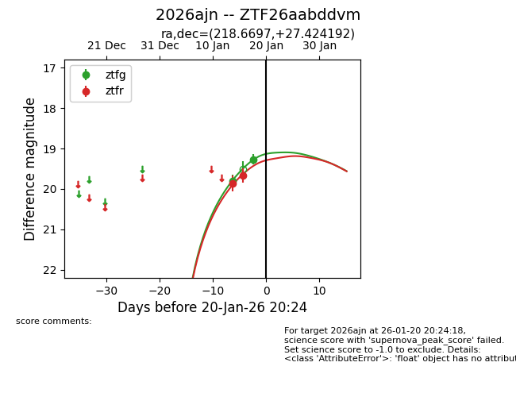
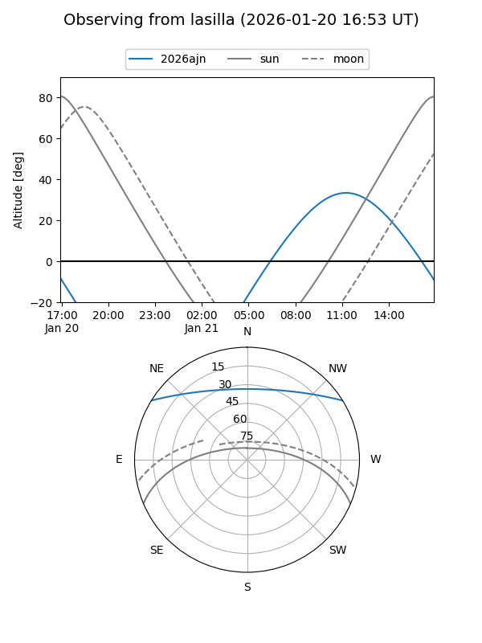
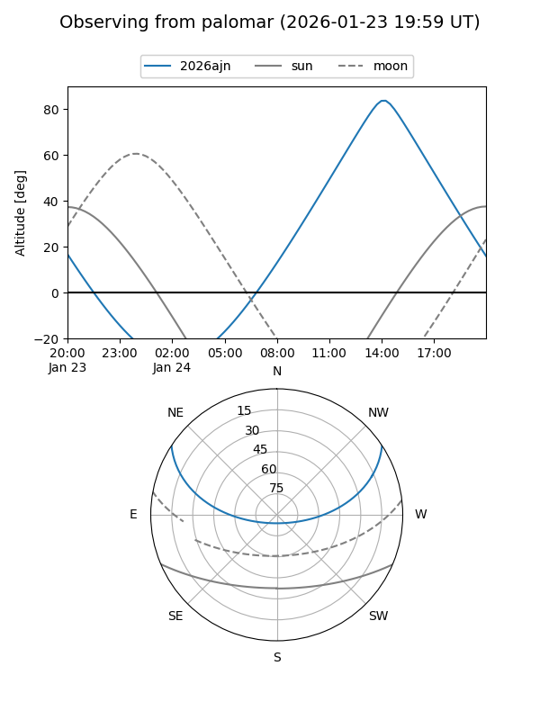
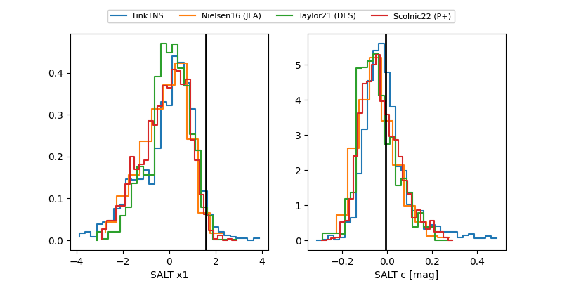

2026ajn
Target 2026ajn at 2026-01-17 05:30
Aliases and brokers:
FINK: link
Lasair: link
ALeRCE: link
TNS: link
YSE: link
alt names
ZTF26aabddvm (ztf,fink_ztf)
2026ajn (tns,yse)
Coordinates:
equatorial (ra, dec) = 218.6697,+27.42419
equatorial (HMS+DMS) = 14:34:40.73,+27:25:27.09
galactic (l, b) = (39.6528,+67.09919)
Flags:
Photometry:
last ztfg=19.80, ztfr=19.67
1 ztfg, 2 ztfr detections
Lightcurve

Visibility


Additional plots
